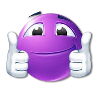

Task Tracker

Author: Fezile Mnikazi
About Me
Welcome to my corner of Task Tracker! my name is Fezile Mnikazi, an independent app developer passionate about creating tools that empower individuals to organize their lives and boost their productivity. After some time learning application development skills of working in various tech roles,
I decided to take the plunge and channel my skills into building something truly meaningful and that I also found helpful during my journey: a todo list tracker that’s not just functional, but intuitive and enjoyable to use.
My Journey
The idea for this application was born out of my own struggles with keeping track of tasks, boosting productivity, and managing time effectively. I found myself overwhelmed by to-do lists scattered across sticky notes. I knew there had to be a better way.
So, I set out on a mission to create a simple yet powerful solution that could help anyone streamline their daily tasks and feel a sense of accomplishment.
What Sets This App Apart
As a solo developer, I poured my heart and soul into this project. Every feature was designed with user experience in mind, drawing from feedback and insights gathered from friends, family, and fellow productivity enthusiasts. My goal was to create an app that feels like a personal assistant,
guiding you through your tasks while keeping things light and motivating.
I believe in the power of simplicity. That’s why this app emphasizes ease of use, allowing you to create, organize, and track tasks in just a few taps. Whether you’re managing work projects, planning personal goals, or juggling daily errands, I want this tool to fit seamlessly into your life.
Looking Ahead
As I continue to refine and improve the app, I’m excited about the future. I’m committed to listening to user feedback and rolling out updates that enhance functionality and introduce new features.
My dream is to foster a community of users who can share tips and inspiration on productivity, helping each other achieve our goals.
Thank you for joining me on this journey! I hope Task Tracker makes your life a little easier and a lot more organized.
Let’s conquer those tasks together! 